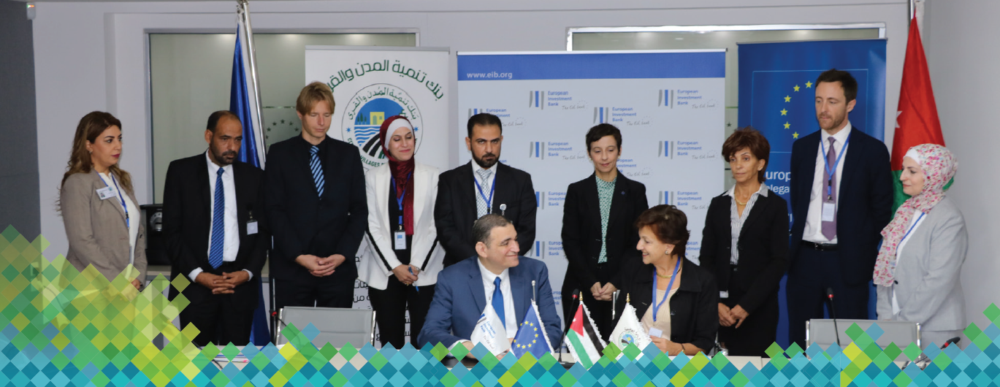
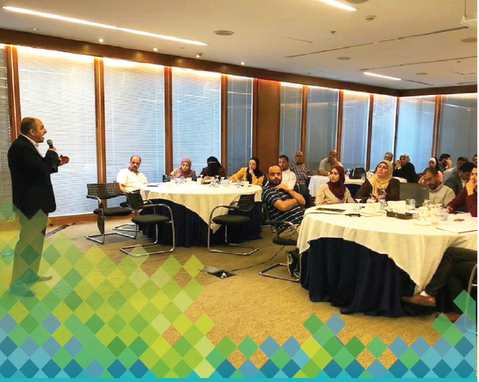
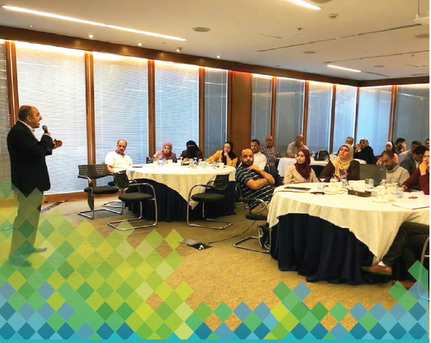

CVDB is an independent public establishment concerned in supporting and financing local Municipal Councils in all aspects. CVDB responsible for monitoring the technical and financial performance for all municipal councils, provide technical experience and services including the training of technicians and assists the councils in appointing priorities for productive projects in all aspects in the light of technical studies as well as socioeconomic feasibility. the financing is establishing through (long term loans, donations and external grants). From ESSRP to MSSRP projects the Project Development Objective (PDO) was changed to “to support Jordanian municipalities affected by the influx of Syrian refugees in delivering services and employment opportunities for Jordanians and Syrians” and the name of the project was changed from Emergency to Municipal Services and Social Resilience Project (MSSRP), in order to highlight the shift of focus from ‘emergency’ to a ‘development’ approach, scheme aiming to enable municipalities to provide labor opportunities for Jordanians and Syrians, the project has already tracked close to 12,000 person days already created as part of the implementation of the first Municipal Grants Cycle. This number is expected to increase, and hence targets met, during 2020 with the implementation of Innovation Fund (IF) activities and the second municipal grants cycle Compared with the end of project target of 3 million beneficiaries under MSSRP, project beneficiaries are currently estimated at 1 million, of which 28 percent, 21 percent, and 47 percent were Syrians, youth, and females, with improved access to municipal services, including 186,760 square meters of rehabilitated, paved and newly opened municipal roads, 1,200 public lighting units installed to enhance the security and safety of roads and neighborhoods at night, and 12,000 square meters of leisure spaces provided. -month extension of the project closing date is required to fully achieve the PDO, particularly to complete implementation of the IF activities, to launch and complete a second Municipal Grants Cycle (MG Cycle 2), and to commission planned capacity building activities linked with IF and MG Cycle 2. The Mission confirmed that revising the project closing date from December 31, 2020 to Dec 31, 2021, would also enable a more systematic documentation and dissemination of project results, and a satisfactory completion of the project’s impact evaluation activities. Given that there is in principle agreement between the Government, the donor partners, and the Bank for such an extension, and that the project grant closing date is expected to be extended upon receipt of the Government’s request, the likelihood of achieving the PDO remains certain.
According to 2016, 59 of Bank’s staff were enrolled in internal and external training programs on different subjects (administrative, technical, financial, environment, engineering and audit), 21 training programs were conducted in participation with MOMA to train 52 municipal employees detailed in the table below , and One employee was awarded a PhD scholarship to Egypt.
Training Program |
Number of Participants |
|
1 |
Needs Assessment and Analysis |
1 |
2 |
Budget Preparation |
4 |
3 |
Performance Measurements and Evaluation |
4 |
4 |
Falsification Detection Techniques |
4 |
5 |
Problem Analysis and Decision Making |
1 |
6 |
Conducting Criminal, Financial and Administrative Investigations |
4 |
7 |
Public Tenders and Supplies |
5 |
8 |
Modern approaches to Human Resources Management |
2 |
9 |
Code of Professional Ethics |
4 |
10 |
Using Evaluation Reports to Improve Performance |
2 |
11 |
Professional Accountant |
1 |
12 |
Preparing Strategic and Implementation Plans |
5 |
13 |
The Opening Session of the 17th ATO Conference |
2 |
14 |
Management of Project Cycles |
1 |
15 |
Applying Standards of Public Accounting |
1 |
16 |
Excellence in Public Service |
3 |
17 |
Capacity Building 1 |
1 |
18 |
Capacity Building 2 |
1 |
19 |
Introduction to Client service |
2 |
20 |
Team Building and Team Work Skills |
3 |
21 |
Change Management |
1 |
Total |
52 |
 

The department continued managing municipal grants provided by external donors.
Emergency Service and Social Resilience Project (ESSRP):
ESSRP main objective was to assist municipalities and hosting communities to face the increased demand for services resulting from Syrian refugees’ influx, and to enhance municipal capacities to support local development. The project aims at immediate response to meet social and economic needs of the municipalities mostly affected by hosting refugees, in addition to enhancing social resilience and institutional capacity to deal with such circumstances. The Project targeted municipalities at the northern boarders of the country.
Project agreement was signed by the Jordan government represented by MOMA, the World Bank and the International Bank for Reconstruction and Development on October, 12, 2013.
- Project starts on Nov. 1, 2013 and ends on Dec. 30, 2017.
- 9 municipalities were provided by 20 USD in the first phase.
- 16 municipalities were provided by 20 USD in the second phase.
- 20 USD were allocated for 16 municipalities in the third phase.
ESSRP donors (according to the official project appraisal document) are:
- The government of Jordan
- The World Bank / the SPF
- England
- Canada / Canadian Immigration Program
- Switzerland
- Sweden
- Netherlands
Project Management and Institutional Development
- Providing technical assistance to municipalities to help them in planning and implementation of activities financed by the Project, in addition to assist executing parties in project management.
- The second phase of the Project in 2016 included 16 municipalities provided with JD 14.160.000.
- The municipalities conducted workshops with the local communities to address community needs and define their priorities. Each municipality had a plan approved by MOMA and the WB.
- 16 municipalities benefited from JD 14.159.993. Detailed shares, disbursement and accomplishment rates are illustrated in table No.18.
Development projects have a significant impact on municipalities as instantaneous assistance does not meet the increasing needs. In order to realize the Bank’s vision of achieving comprehensive and continuous development, and to support municipal independency to ensure appropriate providence of service; ESSRP supported 16 municipalities in their development projects. These projects constituted 15% of each municipal grant.